Free AI tools

DBX: one small free app to open and edit 100+ kinds of databases
DBX is a free, tiny app that lets you browse, search and edit over 100 kinds of databases, with an AI helper that writes queries for you.

PureMac: free up space on your Mac without a subscription
PureMac is a free, open-source Mac cleaner that removes junk, fully uninstalls apps, and never tracks you or tries to scare you.

Strata: run a big, private AI chatbot on your own gaming PC
A free one-click installer that runs a large Qwen AI model on a normal gaming PC, so your chats never leave your computer.

Recordly: make polished screen recordings and demos for free
Recordly is a free screen recorder and editor that adds automatic zooms, a smooth cursor, webcam bubbles and styled backgrounds to your videos.

OpenSEO: get found on Google without a big monthly SEO bill
OpenSEO is an open-source alternative to Semrush and Ahrefs for keyword research, rank tracking and site audits, where you pay only for what you use.

Tolaria: a free notes app where you own every file
Tolaria is a free, offline notes app that keeps your knowledge in plain text files you own, with full version history and no account.

PhotoCraft: a free Photoshop-style editor that opens real PSD files
PhotoCraft is a free, open-source photo editor that works like Photoshop, opens and saves real PSD files, and runs offline on your computer.

OpenReel: a free video editor in your browser, no watermark
OpenReel is a free, open-source video editor that runs in your web browser and exports your videos with no watermark.
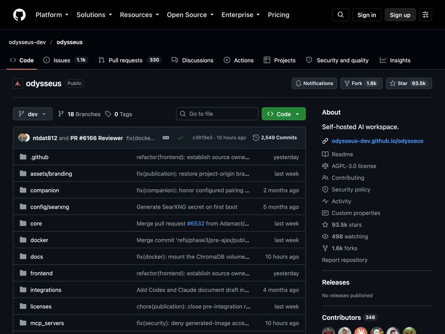
Odysseus: your own private AI workspace, run on your own machine
Odysseus is a free, self-hosted AI workspace for chat, deep research, documents, email, notes and calendar, so your data stays with you.
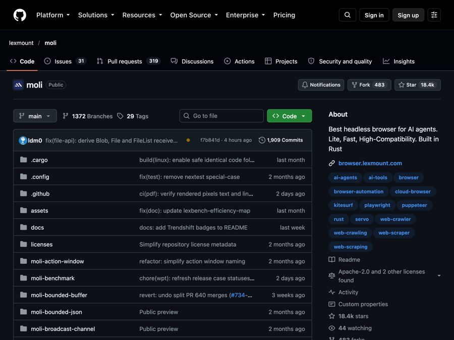
Moli: a fast, light web browser built for AI helpers
A free invisible web browser that lets AI helpers read, search and use websites quickly, while using far less computer memory.

OpenPencil: open Figma files for free and design with AI
OpenPencil is a free, open-source design app that opens and saves Figma files, builds designs from a chat prompt, and lets you collaborate without an account.
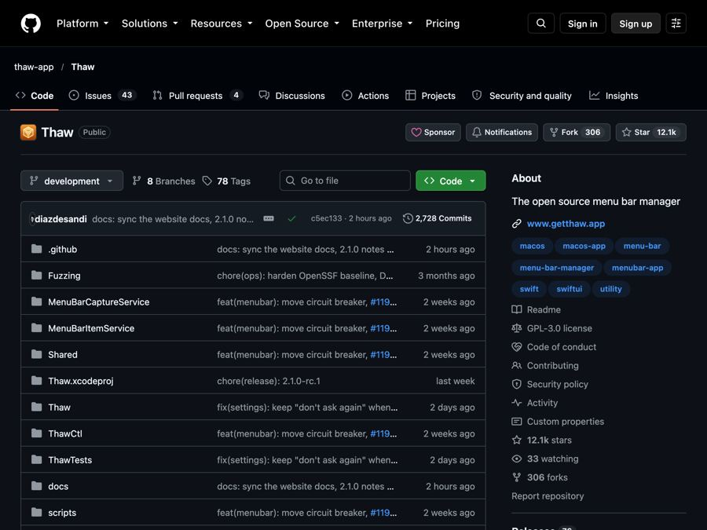
Thaw: clean up your crowded Mac menu bar for free
Thaw is a free, open-source Mac app that hides, sorts and styles the cluttered icons in your menu bar, with no tracking and no account.
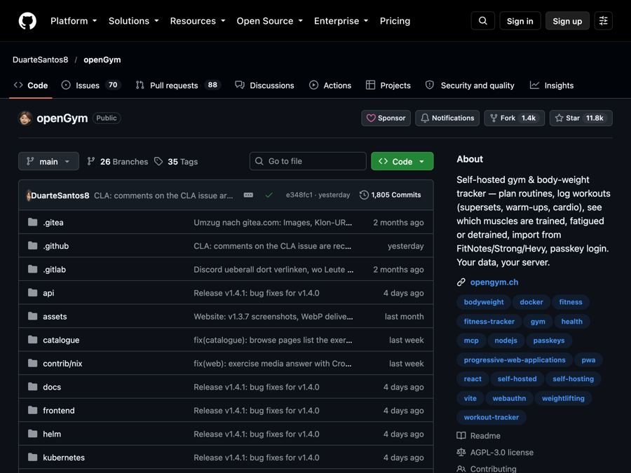
openGym: a free workout tracker where you own your data
A free workout and body-weight tracker you run yourself, with plans, guided sessions, 5,600+ exercises and no subscription or ads.

Compositor: a free Photoshop-style photo editor for your Mac
A free, open-source Mac image editor with layers, masks, blend modes and Photoshop-style shortcuts, and no monthly subscription.
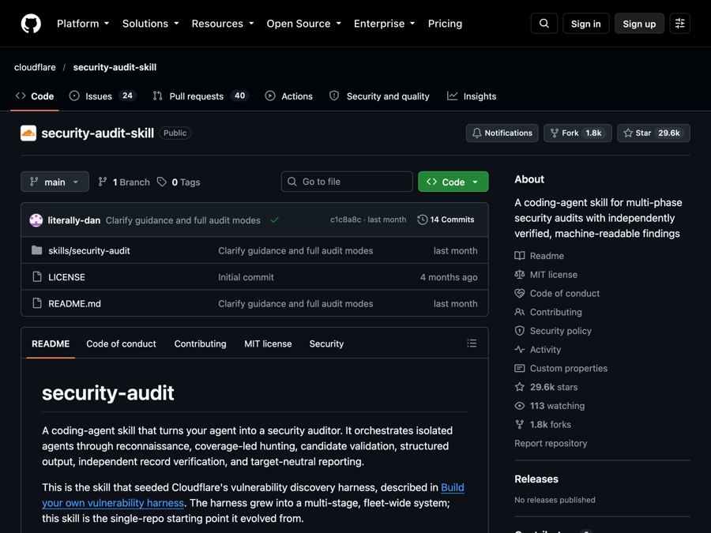
Security Audit: Cloudflare's free add-on that checks your code
Cloudflare's free add-on that turns your AI coding helper into a careful security reviewer and writes a clear report of real problems.

Hindsight: give your AI helper a memory that actually learns
A free memory system that helps AI agents remember past chats and learn from them, instead of starting from zero every time.

Brag: turn your finished project into a launch video, free
A free AI add-on that turns the project you built into a short launch video with music, motion and ready-to-post text.
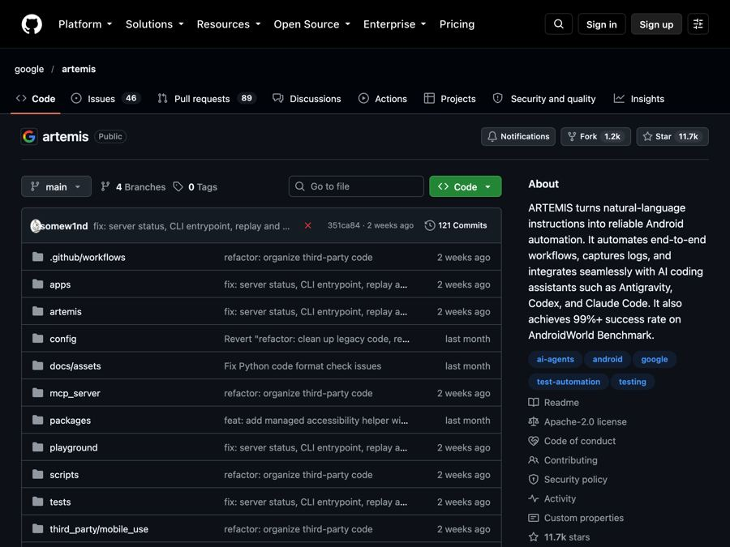
Artemis: Google's free AI that taps through your Android phone
A free tool from Google that turns plain-English instructions into real taps and swipes across apps on an Android phone.

Vorssaint Utils: one free Mac app instead of a dozen paid ones
Vorssaint Utils is a free Mac menu bar app with per-app volume, window snapping, clipboard history, a system monitor and much more.

Diagram Design: clean, magazine-style diagrams from one sentence
Diagram Design is a free AI add-on that turns plain-English requests into clean, on-brand diagrams saved as one easy-to-open file.

DeepSeek Harness: DeepSeek's own open-source AI agent you can shape
DeepSeek Harness is DeepSeek's free, open-source AI agent where every feature is a plugin you can swap, add or build yourself.

OpenLogi: a light, free replacement for Logitech Options+
OpenLogi is a free, lightweight app that controls Logitech mice, keyboards, webcams and lights without Logitech's own heavy software.

OfficeCLI: let your AI build real Word, Excel and PowerPoint files
OfficeCLI is a free tool that lets AI helpers create, read and edit real Word, Excel and PowerPoint files, no Office install needed.

Archify: describe any idea, get an interactive diagram
Archify is a free AI add-on that turns plain descriptions, plans or code into interactive diagrams saved as one shareable web page.

Colibri: run giant AI models on the computer you already own
Colibri runs huge open AI models on an ordinary computer by keeping a small part in memory and reading the rest from disk.
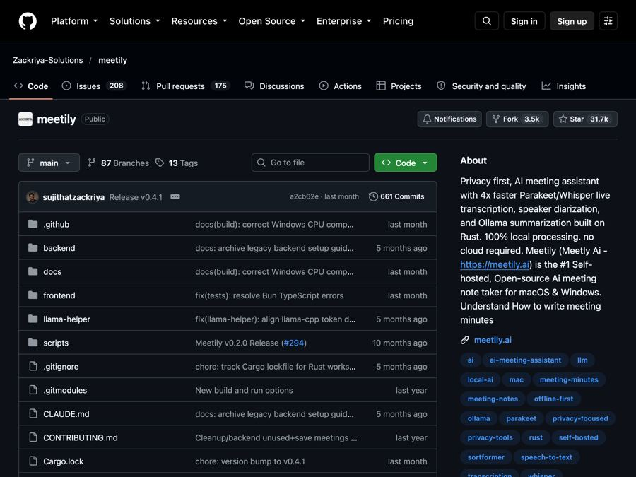
Meetily: free AI meeting notes that stay on your computer
A free, private meeting assistant that transcribes and summarizes your calls on your own computer, even offline.

Hallmark: stop your AI from building websites that look AI-made
Hallmark is a free design add-on for AI coding helpers that steers them away from generic, cookie-cutter web pages.
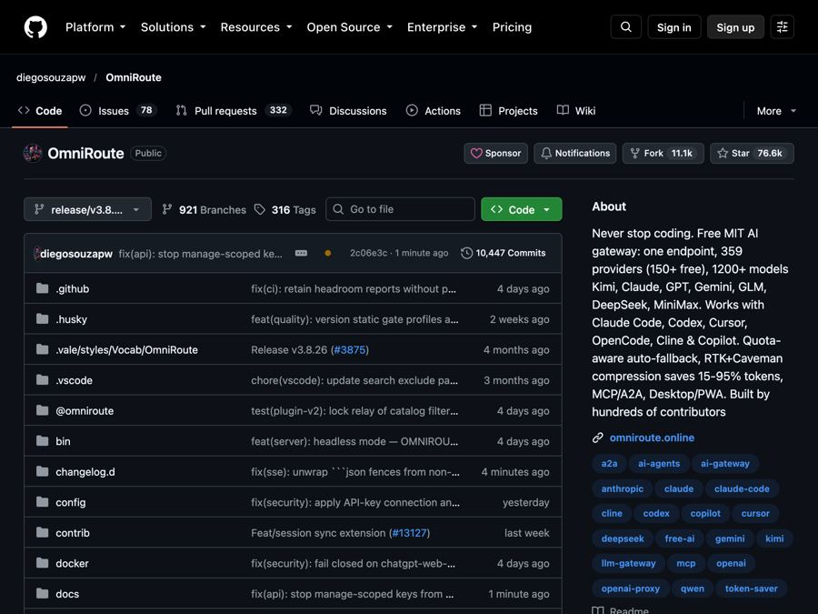
OmniRoute: one free hub to connect your AI tools to many models
A free hub that links your AI tools to many AI providers and switches to another when one runs out.
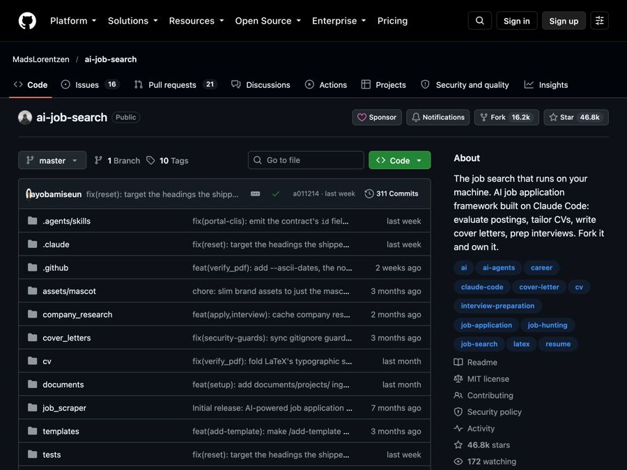
AI Job Search: the free kit that tailors your CV for every job
An AI job-hunting kit that scores job posts, tailors your CV and cover letter, and builds interview prep packs.

OpenCut: the free, open-source CapCut alternative
A free, open-source video editor that runs in your browser, now being rebuilt for desktop, mobile and AI agents.
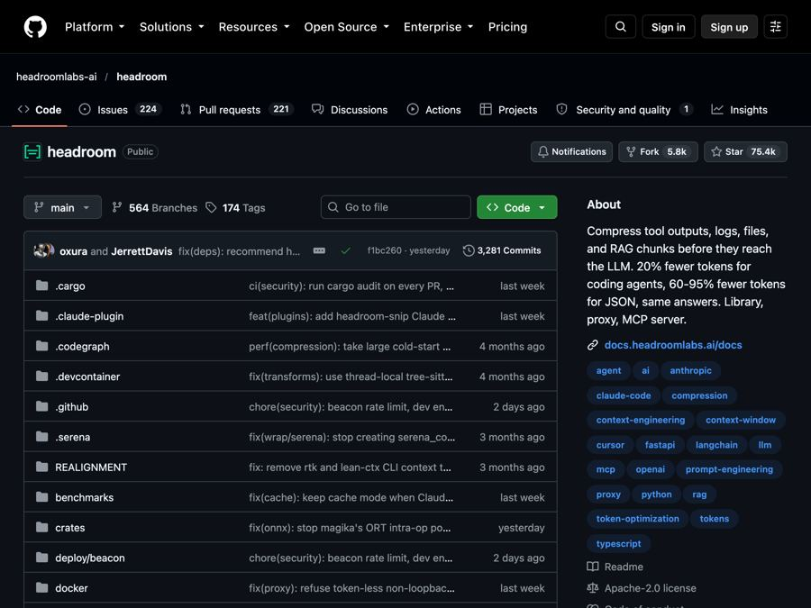
Headroom: same AI answers, a much smaller token bill
Headroom shrinks the logs, files and data your AI reads, right on your computer, so you pay for fewer tokens and get the same answers.
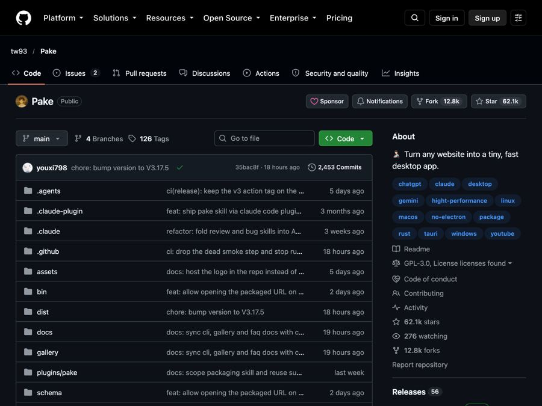
Pake: turn any website into a tiny desktop app for free
Turn any website into a small, fast desktop app, often under 10 MB, with ready-made apps for ChatGPT and more.

Apple Container: Apple's free, light way to run Linux apps on a Mac
Apple's own free tool for running Linux containers as tiny virtual machines on Apple silicon Macs.

Ponytail: stop your AI from writing 300 lines for a 10-line job
Ponytail is one free prompt that makes your AI coding helper reuse what exists, write far less code and still keep the safety checks.

Open Notebook: a private NotebookLM you fully own
A free, private alternative to Google NotebookLM that chats with your files and turns notes into podcasts.

OpenMontage: turn your AI helper into a free video studio
Describe a video in plain words and your AI assistant researches, scripts, narrates, edits and renders it for you.

Understand Anything: see how any codebase fits together in minutes
Understand Anything turns a codebase, wiki or docs into an interactive map you can zoom, search and ask questions about, in plain English.

Matt Pocock's Skills: make your AI coder actually listen
A well-known coding teacher's own set of AI skills that help coding assistants ask better questions, stay on track and build cleaner software.
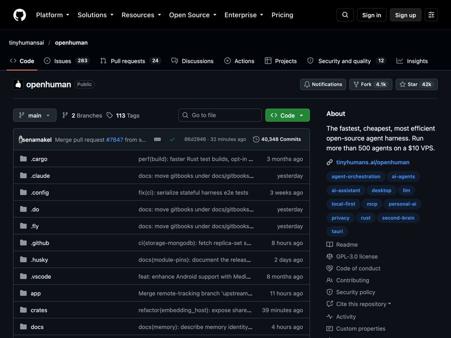
OpenHuman: run AI agents cheaply, from a free desktop app
OpenHuman is a free, lightweight app for running AI agents that browse, search and use your apps, while using far less computer power.
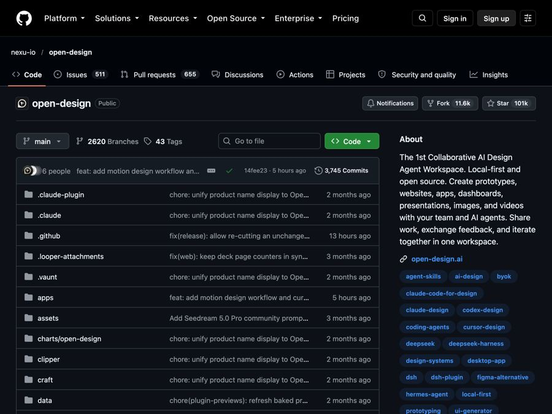
Open Design: a free AI studio for prototypes, decks and dashboards
Open Design is a free, open-source AI design studio that makes on-brand prototypes, slide decks, dashboards and images using the AI you already have.
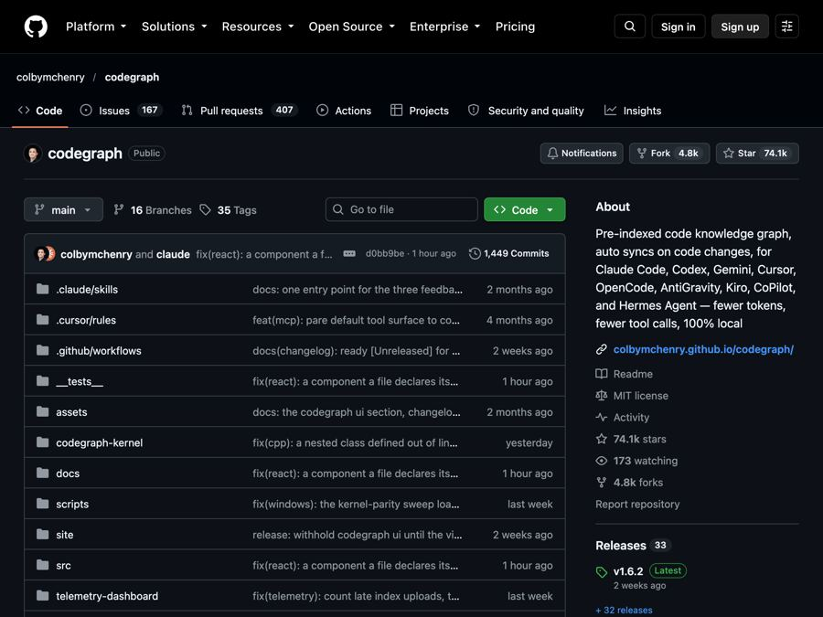
CodeGraph: help your AI coder find the right code in one step
CodeGraph builds a ready-made map of your code on your own computer, so AI coding helpers find what they need with fewer steps and less cost.
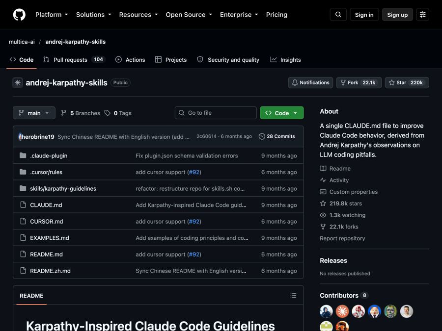
Karpathy Skills: one free file that makes AI coders think first
One free instruction file, based on Andrej Karpathy's advice, that helps AI coding tools ask first, stay simple and only change what you asked.
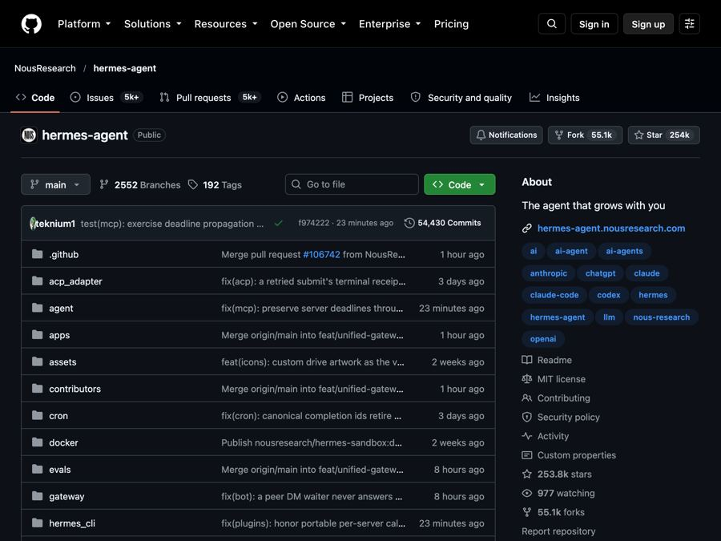
Hermes Agent: a free AI assistant that learns and remembers
A free AI assistant from Nous Research that remembers you, builds new skills from experience, and chats with you on Telegram, Slack or WhatsApp.

Graphify: give your AI helper a map of your whole project
Graphify turns your code, docs, PDFs, images and videos into one clickable map, so your AI helper looks things up instead of guessing.
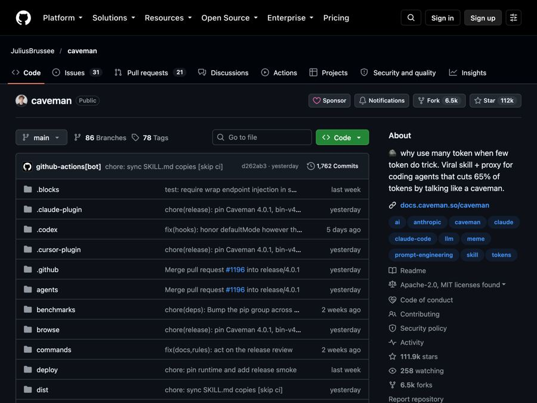
Caveman: make your AI coding helper talk less and cost less
A free add-on that makes AI coding assistants give short, caveman-style answers and read less, so you spend fewer tokens.
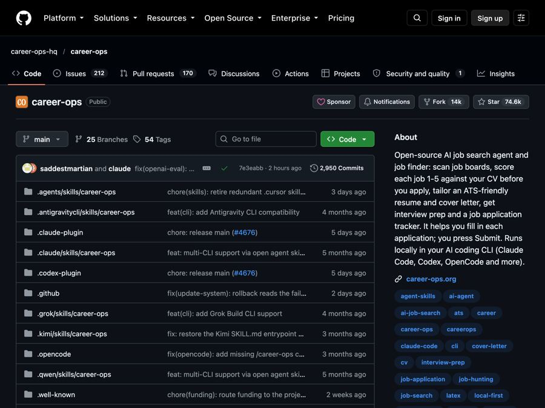
Career-Ops: a free AI job search helper that says when to skip
A free AI job search helper that checks each job against your CV, tells you when to skip, and drafts tailored CVs and cover letters.
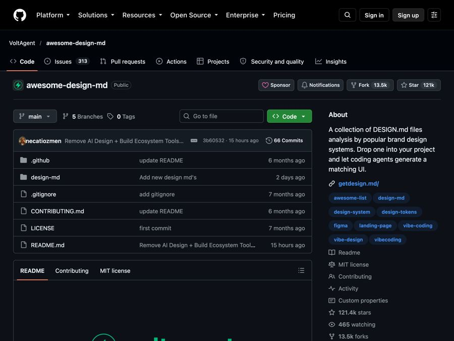
Awesome DESIGN.md: free style guides that make AI build nicer pages
A free collection of ready-made design guides, based on popular websites, that AI tools read to build pages with a consistent, polished look.
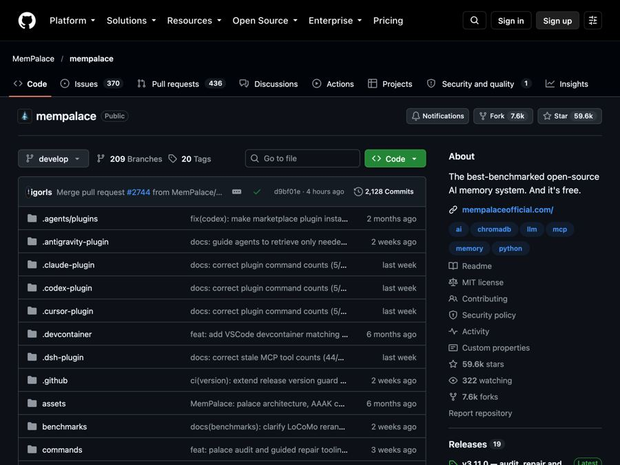
MemPalace: give your AI a private memory of past chats
A free memory system that saves your AI conversations word for word on your own computer and finds the right ones when you need them.
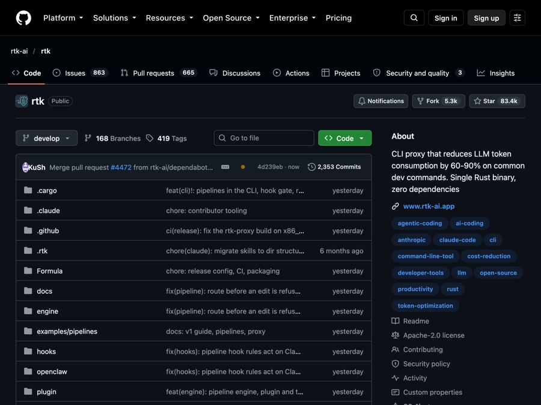
RTK: a free way to shrink what your AI coding helper has to read
A small free tool that trims noisy command output before your AI coding assistant reads it, so it uses fewer tokens.

autoresearch: Karpathy's AI that runs experiments while you sleep
Andrej Karpathy's small experiment where an AI agent tweaks, trains and tests a tiny AI model overnight, keeping only what works.
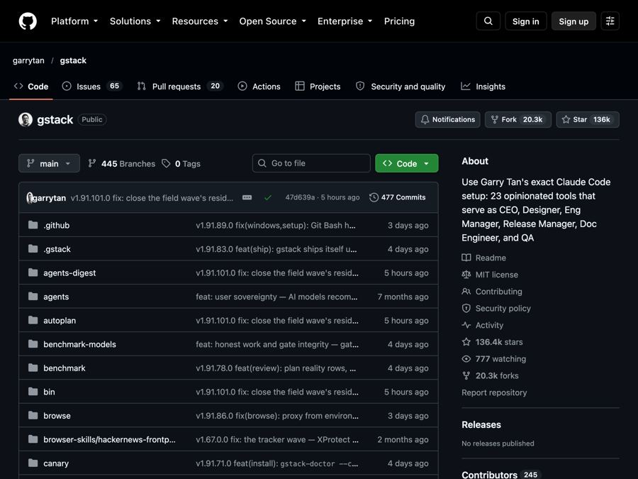
gstack: use Y Combinator's CEO's own AI coding setup for free
Garry Tan's free Claude Code skills that act like a virtual CEO, designer, code reviewer, QA tester and release engineer.

CorridorKey: clean green screen cutouts, even around hair
A free AI tool that pulls people cleanly off green or blue screens, keeping fine hair, motion blur and see-through edges.

Paperclip: run a team of AI agents like a real company
A free, self-hosted app that organizes AI agents like a company, with goals, an org chart, budgets and one dashboard.

Project NOMAD: Wikipedia, maps and AI that work with no internet
A free offline knowledge box that puts Wikipedia, medical guides, Khan Academy courses, maps and a local AI on your own computer.

Voicebox: a free, private AI voice studio on your own computer
A free app that clones voices, reads text aloud in 23 languages, and lets you dictate into any app, all on your own computer.
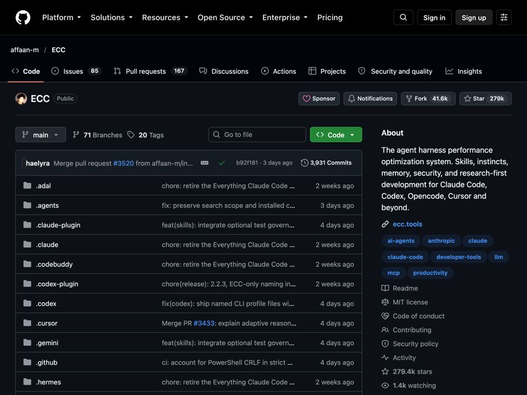
ECC: hundreds of ready-made skills for your AI coding helper
A big free toolkit that gives AI coding helpers 71 agents, 311 skills, memory and built-in security checks.
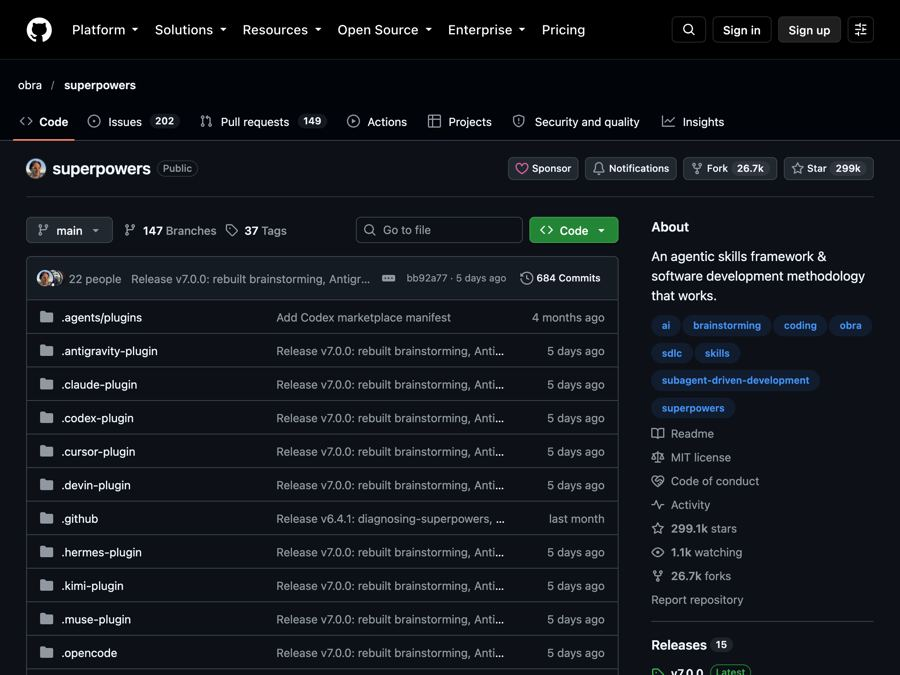
Superpowers: make your AI coder plan before it builds
Free skills that make AI coding helpers ask questions, write a plan, test and review their work like a careful engineer.

nanobot: a tiny personal AI assistant you run and own yourself
A small, free AI assistant you host yourself, then chat with in your browser, Telegram, Slack, Discord or email.

World Monitor: all the world's news on one free live map
A free live dashboard that puts global news, markets and events on one interactive map, with short AI-written news briefs.

Handy: talk instead of type, free and fully offline
Handy is a free, open-source app that turns your voice into text in any app, all processed privately on your own computer.

agent-browser: let your AI helper click around websites for you
agent-browser is a free tool from Vercel Labs that lets AI coding agents open, read, and click through real websites.
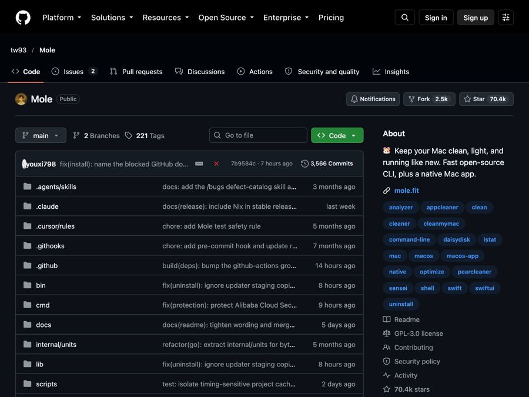
Mole: a free way to deep-clean your Mac
Mole is a free, open-source tool that cleans junk, fully uninstalls apps, and shows what is filling up your Mac.

OpenClaw: your own free AI assistant inside WhatsApp and Slack
OpenClaw is a free, open-source AI assistant that runs on your own computer and chats with you in WhatsApp, Telegram, Slack, and more.

VibeVoice: Microsoft's free AI that transcribes an hour of audio
VibeVoice is Microsoft's open-source voice AI that turns up to 60 minutes of audio into text, labeling who spoke and when.

DeepTutor: a free AI tutor that learns from your own notes
DeepTutor is a free, open-source AI tutor that answers questions, makes quizzes, and builds study plans from your own notes, books, and videos.